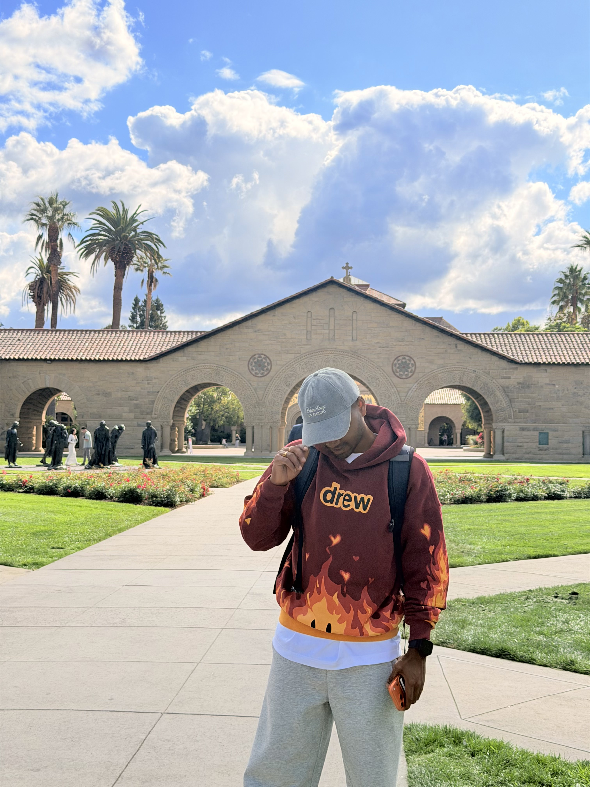

BASED IN PITTSBURGH, USA

I'M A MOTIVATED MASTERS STUDENT IN MECHANICAL ENGINEERING AT CARNEGIE MELLON UNIVERSITY, PURSUING EXCELLENCE IN RESEARCH WITH A 4.0 GPA. MY PASSION LIES IN ADVANCING THE FRONTIERS OF MACHINE LEARNING, ROBOTICS, AND COMPUTATIONAL ENGINEERING. I AM ACTIVELY SEEKING OPPORTUNITIES TO CONTINUE MY ACADEMIC JOURNEY THROUGH A PHD PROGRAM, WHERE I CAN CONTRIBUTE TO GROUNDBREAKING RESEARCH AND INNOVATION.
VIEW
EXPERIENCE
Subjects: MLAI for Engineers, Modern Control Theory, Soft Robots, Intro to Deep Learning, Engineering a Startup
Python (PyTorch, TensorFlow, CUDA, PySpark, OpenCV), C++, Docker, ROS, Kotlin
Google Cloud Platform (GCP), AWS, Power BI
Solidworks, AutoCAD, Matlab
FOR ME
IS NOT JUST
Carnegie Mellon University | Expected May 2026
GPA: 4.0/4.0
Pursuing advanced studies in Machine Learning for Engineers, Modern Control Theory, Soft Robots, Deep Learning, and Engineering Entrepreneurship. Maintaining perfect academic performance while conducting cutting-edge research at CMU's Computational Engineering and Robotics Lab.
SRM Institute of Science and Technology, Chennai | May 2023
GPA: 8.7/10
Strong foundation in mechanical engineering principles, computational methods, and design. Completed thesis on pedicle screw fixation design using finite element analysis.
Research, for me, is not just a pursuit of knowledge—it's a commitment to solving real-world problems through innovative engineering solutions. My work spans the intersection of machine learning, robotics, and computational engineering, where I aim to bridge theoretical advances with practical applications.
As a motivated graduate student with a perfect 4.0 GPA, I am actively seeking opportunities to continue my academic journey through a PhD program. My research interests focus on developing intelligent systems that can operate in complex, dynamic environments—from underwater robotics for environmental monitoring to neural architecture search for security applications.
I believe that the future of engineering lies in the seamless integration of AI, robotics, and traditional mechanical systems. Through my PhD studies, I aim to contribute to this vision by developing novel algorithms and systems that push the boundaries of what's possible.
CERLAB, CMU | May 2025 - Present
Working on graph neural networks for engineering drawing classification and image marking. Studying state-of-the-art research papers and developing novel approaches for automated design analysis.
CERLAB, CMU | Aug 2024 - May 2025
Developed Isaac Sim simulation environment for SLAM test bed, with the ultimate goal of creating SLAM algorithms for mining environments. Simulated different LiDAR and camera integrations for wheel loader operations in complex terrains.
SRM Institute | Jan - May 2023
Developed finite element models to study pedicle screw fixation and the effect of screw variations on stress distribution in lumbar spine applications.
FEATURED
INNOVATION
Aug - Dec 2024
Developed a bio-inspired soft robotic device that monitors water quality and detects potential of hydrogen (pH) levels in water bodies. This project addresses the limitations of stationary sensors and manual sampling methods by creating an autonomous underwater drone system capable of dynamic water quality monitoring in real-time.
Jan - May 2025
Implemented a Reinforcement Learning-based neural architecture search framework for deepfake voice detection. Established comprehensive data processing pipeline for audio preprocessing and feature extraction. Achieved state-of-the-art performance with an Equal Error Rate (EER) of 2.8% using baseline models trained for 50 epochs. Currently refining the NAS framework for optimal architecture discovery.
Aug 2024 - May 2025
Developed an Isaac Sim simulation environment for SLAM test bed with the ultimate goal of creating SLAM algorithms for mining environments. Simulated different LiDAR and camera integrations for simple hauling and loading operations for wheel loaders in complex simulated environments. This work contributes to autonomous navigation in challenging industrial settings.
May 2025 - Present
Working on graph neural networks for engineering drawing classification and automated image marking. This research involves studying state-of-the-art papers and developing novel approaches for understanding and processing technical drawings using deep learning techniques.
Jan - May 2023
Developed finite element models to study pedicle screw fixation and the effect of screw variations by analyzing different sizes and materials. Observed stress distribution patterns on different screws with varying forces applied on vertebrae, contributing to improved spinal implant design.
WHAT I
EXPERTISE
Academic research in Machine Learning, Robotics, and Computational Engineering. Experience in developing novel algorithms and systems for real-world applications.
SLAM algorithms, simulation environments, and robotic systems development. Expertise in Isaac Sim, ROS, and LiDAR integration for autonomous navigation.
Neural Networks, Reinforcement Learning, Graph Neural Networks, and Neural Architecture Search. Specialized in deep learning for engineering applications.
Python (PyTorch, TensorFlow, CUDA), C++, ROS, Docker. Full-stack development for research applications and engineering solutions.
Comprehensive data processing pipelines, feature extraction, and statistical analysis. Experience with GCP, AWS, and Power BI for large-scale data handling.
Seeking PhD opportunities to continue research in ML, Robotics, and Computational Engineering. Open to collaborations and research partnerships.
LET'S
TOGETHER
I'm actively seeking PhD opportunities and research collaborations. Whether you're a potential advisor, research partner, or industry collaborator, I'd love to connect and discuss how we can advance the frontiers of engineering together.